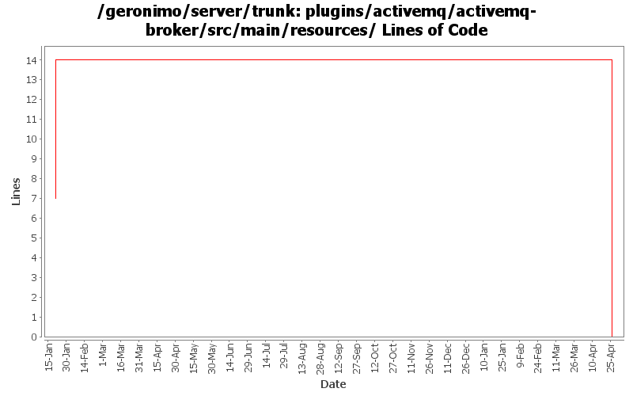

[root]/plugins/activemq/activemq-broker/src/main/resources

| Author | Changes | Lines of Code | Lines per Change |
|---|---|---|---|
| Totals | 17 (100.0%) | 42 (100.0%) | 2.4 |
| xuhaihong | 8 (47.1%) | 31 (73.8%) | 3.8 |
| dwoods | 3 (17.6%) | 7 (16.7%) | 2.3 |
| kevan | 4 (23.5%) | 4 (9.5%) | 1.0 |
| gawor | 2 (11.8%) | 0 (0.0%) | 0.0 |
Remove old (non-blueprint) based activemq modules
0 lines of code changed in 2 files:
GERONIMO-4941 JMS connector ports are not listed on the console after the server started
4 lines of code changed in 2 files:
Update the placeholder we use in the ActiveMQ configuration file
14 lines of code changed in 2 files:
GERONIMO-4796 can't restart DefaultActiveMQBroker after I stop it
2 lines of code changed in 2 files:
Fix ActiveMQ shutdown problem. Turn off ActiveMQ's shutdown hook. Geronimo will shutdown the AMQ broker. Avoids error when broker is shutdown twice. Once by Geronimo another time by ActiveMQ.
2 lines of code changed in 2 files:
GERONIMO-4685 Revert accidental commit
1 lines of code changed in 1 file:
GERONIMO-4685 Update to new Tomcat version
1 lines of code changed in 1 file:
GERONIMO-4475 Improve JMS portlet for AMQ 5.3 Broker configuration.
Update the temp storage path and binding host name with the values in the config-substitutions.properties
11 lines of code changed in 2 files:
GERONIMO-4475 Improve JMS portlet for Borker configuration. Applied 4 patches from Ivan.
7 lines of code changed in 3 files: